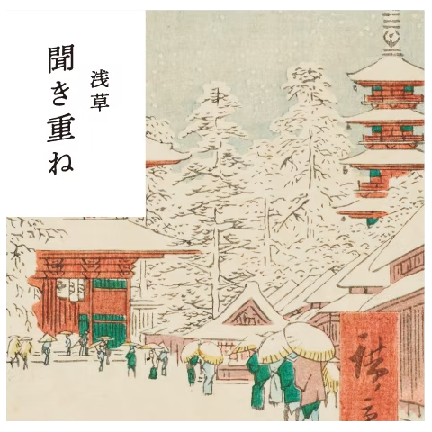
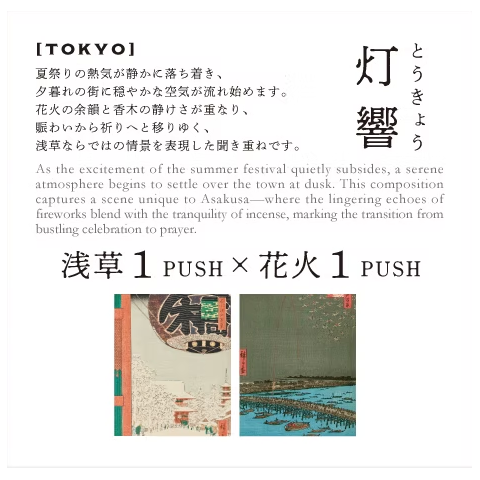
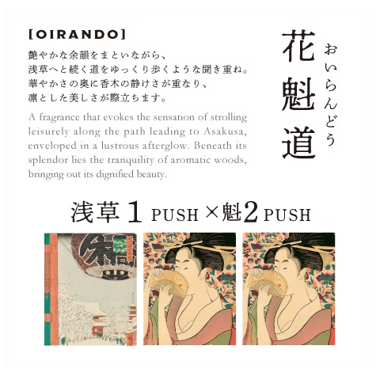

香りを選ぶ
店頭で香りを確かめながら、今日の気分に合う香りを。
ほんの少し、いつもと違う街歩きを。
店頭で香りを確かめながら、今日の気分に合う香りを。
お気に入りの香りをまとう。2種類までの聞き重ねも楽しめます。
香りと一緒に、好きな道を、好きなペースで。
描かれた世界に触れながら、好きな一香を探す。
作品と香りの物語に触れる、最初の五景。
時代の表情とともに巡る、もうひとつの五景。
※作品の名称・シリーズへの割り振りは未確定。ここではカードの配置だけを検証しています。公式ビジュアルの元画像は変更していません。
気に入った香りを、ひとつでも。ふたつ重ねても。




歩き方は、あなたの自由。
3つのモデルコースをヒントに、いつもと違う浅草を。
※散策カードの写真は素材待ちのため仮枠です。LP内の3コースはモデルコースで、店舗との提携企画ではありません。
所在地・営業時間・アクセス方法は、公式情報を確認して掲載します。
Googleマップで見る ↗はい。店頭で香りを確かめながら、お好みの香りをお選びいただけます。
店頭で香りを選び、香りをまとって浅草散策を楽しむ体験です。所要時間は店頭で5〜10分ほどが目安です。
2種類までの聞き重ねは、体験料金に含まれます。
お食事は、香りが落ち着く2時間後くらいを目安にされるのがおすすめです。香りの強さや持続時間には個人差がありますので、周囲へのご配慮をお願いいたします。
予約なしでも体験できます。混雑時はお待ちいただく場合があります。
浅草の街並みを楽しむモデルコース。